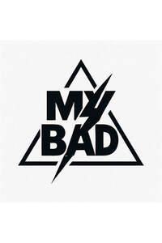

Trade Mark Journal No.2025/043 24 October 2025
UK00004277353 14 October 2025 (18,25)

- Class 18
- Bags; Tote bags; Luggage bags; Duffle bags; Carry-on bags; Toiletry bags; Drawstring bags; Carry-all bags; Belt bags and hip bags; Grocery tote bags; Cross-body bags; Luggage, bags, wallets and other carriers; Crossbody bags; Cloth bags; Bucket bags; Leather bags; Sling bags; Canvas bags; Belt bags; Clutch bags; Kit bags; Travel bags; Messenger bags; Garment bags; Leather bags and wallets; Shoulder bags; Make-up bags; Cosmetic bags; Waterproof bags; Makeup bags; Camping bags; Courier bags; Roll bags; Gym bags; Knitted bags; Hand bags; Cabin bags; Travelling bags; Flight bags; Overnight bags; Beach bags; Leather shopping bags; Canvas shopping bags; Bum bags; Roller bags; Suit bags; Wash bags for carrying toiletries; Waist bags; Wallets; Pocket wallets; Handbags, purses and wallets; Leather wallets; Card wallets; Card wallets [leatherware]; Wallets with card compartments; Key wallets; Pocketbooks [handbags]; Holders in the nature of wallets for keys; Billfolds; Leather credit card wallets; Wallets including card holders; Credit card wallets; Business card holders in the nature of wallets; Wallets incorporating card holders; Credit card cases [wallets]; Purses; Wallets, not of precious metal; Leather coin purses; Leather purses; Coin purses; Clutch purses [handbags]; Clutches [purses]; Purses [leatherware]; Purses, not of precious metal [handbags]; Wallets incorporating RFID blocking technology; Briefcases; Leather briefcases; Briefcases [leather goods]; Pouches for holding make-up, keys and other personal items; Collars for pets; Animal leashes; Back packs.
- Class 25
- Clothing; Knitwear [clothing]; Jackets [clothing]; Ready-to-wear clothing; Linen clothing; Headbands [clothing]; Gloves [clothing]; Clothes; Jerseys [clothing]; Kerchiefs [clothing]; Denims [clothing]; Shorts [clothing]; Leather clothing; Knitted clothing; Hoods [clothing]; Windproof clothing; Embroidered clothing; Wristbands [clothing]; Bandeaux [clothing]; Belts [clothing]; Rainproof clothing; Waterproof clothing; Casual clothing; Visors [clothing]; Jackets being sports clothing; Stuff jackets [clothing]; Bottoms [clothing]; Ready-made clothing; Clothing for leisure wear; Trunks being clothing; Woven clothing; Leisure clothing; Clothing for sports; Sports clothing; Athletic clothing; Tops [clothing]; Weatherproof clothing; Beach clothing; Thermal clothing; Men's clothing; Dance clothing; Footwear; Sneakers [footwear]; Footwear [excluding orthopedic footwear]; Flip-flops for use as footwear; Athletic footwear; Sports footwear; Footwear for sport; Trainers [footwear]; Casual footwear; Athletics footwear; Leisure footwear; Beach footwear; Parts of clothing, footwear and headgear; Shoes; Children's footwear; Shoes for leisurewear; Infants' footwear; Footwear not for sports; Ladies' footwear; Slip-on shoes; Sneakers; Sports shoes; Sport shoes; Leather shoes; Athletic shoes; Waterproof shoes; Hiking shoes; Leisure shoes; Footwear for men and women; Sandals and beach shoes; Athletics shoes; Rubber shoes; Tennis shoes; Sportswear; Basketball shoes; Boots for sports; Shoes for casual wear; Jogging shoes; Headwear; Visors [headwear]; Caps [headwear]; Leather headwear; Peaked headwear; Sun visors [headwear]; Headgear; Beanie hats; Sports headgear [other than helmets]; Fashion hats; Hats; Sports caps and hats; Beanies; Bobble hats; Baseball caps and hats; Neckwear; Headbands; Woolen clothing; Woolly hats; Hoodies; T-shirts; Sweatshirts; Sweat shirts; Hooded sweat shirts; Polo shirts; Pique shirts; Night shirts; Sleepwear; Nightwear; Loungewear; Pajamas; Playsuits [clothing]; Underwear; Jogging bottoms; Tracksuit tops; Tracksuits; Sweatpants.
Sandra Manning